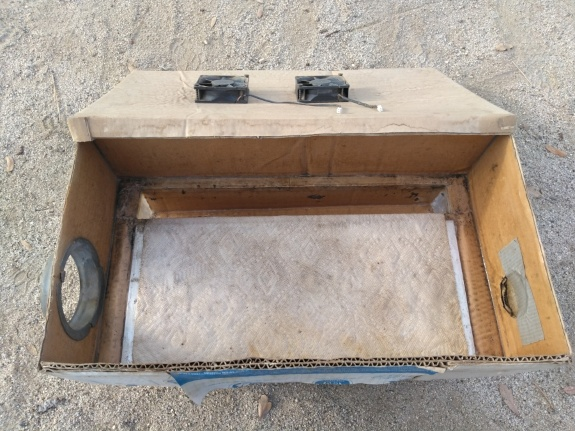

|
The Problem With
Swamp Coolers
Okay, so I know what you’re thinking, “The problem with
swamp coolers, is that they don't work!”. Depending on your personal tastes in
heat and humidity, and what kind of environment you live in, that can be
varying levels of true. The actual problem with swamp coolers however, is in
their design principal, that is, the way they work. You can only cool air the
way a swamp cooler does one time. After it’s been cooled, the air must be
dehumidified (usually not practical), or just tossed out and new air brought in
and cooled. This technique puts a hard limit on how cool we can reduce our
environment to. As I understand things, a 20 degree drop is generally about a
best case scenario.
There is however, another way… If we choose not to cool the
air directly, we remove this limit, and receive in its place, another, much
cooler limit (pun intended). The trick here is to cool the air indirectly.
Again, I know what you’re thinking, and that’s not what I’m talking about here.
The indirect, 2-stage coolers that already exist, still work on the same
principal. They still cool the air the same way, then throw it against a heat
exchanger, toss that air out, grab new air and repeat in a continuous fashion.
They’re so close… The heat exchanger means the environment isn't being filled
with humidity, but we still have that 20ish degree limit on temperature
reduction. When it’s 110 out, 90 degrees in, is just not pleasant, and that's
best case! The good news is we can do better.
First, lets look at how swamp coolers work. No I mean how
they really work, how people seem to think they work is not quite right. Let’s
start with what’s commonly considered to be their operating principal, and work
from there.
So as things are usually described, we have a cooler pad
that is most often made of wood shavings. Water is pumped over the pads, and
the wood fibers soak up some of the water as it flows over. A fan pulls air
over the wet fibers, drying them some. Of course drying means evaporation, and
for water to evaporate, it needs to soak up some energy in order to change
state. Consequently, the air that is flowing over the fibers gives up some
energy to the water, in the form of heat. Thus, as the air flows over the
fibers, it gives up heat to the evaporating water, and the air is cooled. This
process repeats continuously, and the space is cooled.
This description is mostly accurate, but it skips a step,
and in doing so confuses the operating principal. The difference is at the
point where the air flows over the wet fibers. The evaporating water doesn’t
cool the air directly, in fact, it’s undoing the cooling capability of the
process. Wait, what? Yes that’s right, the evaporating water, while responsible
for the cooling, is actually undoing its own work. Allow me to explain… Let’s
look at the evaporation process again. Picking up, as I mentioned, where the
air flows over the wet pad fibers. The air flows over, and the evaporating
water absorbs heat from the wet pad fibers, this cools the pad fibers,
not the air! Then the next bit of air that flows over the now cooled
fibers, is itself cooled. BUT, that cooled air is mixed directly with
the heat that was just removed from the fibers, because the “steam” (I’m
calling it steam for a reason, it’s just moisture in the air) that just
evaporated from the fibers, is still right there and mixes with the cooled air.
To understand this better, it might help to scale the temperature range up a
bit for an example. Imagine an old fashioned sauna, where the steam is provided
by pouring water on hot rocks (I called the moist air “steam”, to help connect
the idea to this example). In this example, the water hits the hot rocks,
absorbs heat, and is converted to steam (moisture in the air). So where did the
heat from the rocks go? The same place the (much lesser) heat from the cooler
pad fibers went...into the water that became steam, and ultimately into the
air! There’s enough heat in the hot rocks to provide a hot steamy environment,
and the cooler pads don't have the same amount of heat energy, so it may look
like a different process, but it’s exactly the same thing! Now, there was a
phase change from liquid to vapor in both the cooler and the sauna. This phase
change is what provides the limited cooling that a swamp cooler can produce. In
the sauna, the absorbed heat for the phase change is inconsequential, there’s
too much heat to notice the tiny amount absorbed and now missing, but in a
swamp cooler this tiny amount underpins the working principal.
So how do we use this new understanding to make a better
cooler? If you’ve ever left a wet rag on a floor, and later when picking it up
noticed the cold spot where the rag had been lying, you might have an idea.
Remember that it’s the cooler pad fibers that are being cooled, and they are in
turn relaying their temperature to the air being cooled, this one detail is the
key here. To illustrate why this matters and how to apply this knowledge, I’ll
first describe a sort of semi-ideal cooler, then I’ll describe one of my
prototype builds.
For
the semi-ideal cooler, lets start by thinking about the cooler pads in
a typical swamp cooler. Wood is most commonly used, and from my
personal experience changing cooler pads, they’re basically just piles
of wood “ribbons” or “wires” (long shavings), bound in the shape of a
pad. Wood is used for its ability to absorb and evaporate the water.
Wood is a bad thermal conductor though, which is bad for our purposes
here. For this semi-ideal cooler, lets imagine that we could use
aluminum or copper for the “ribbons”, and that the metal could be made
almost sponge like so as to absorb and evaporate water the same way as
the wood “ribbons”. Now imagine that our metallic “ribbons” are
straight, and short (maybe 3-8 inches), and that only half the length
is sponge like, the other half is typical metal. Next imagine that we
put a big array of these “ribbons” through a plastic plate, such that
the sponglike half sits on one side of the plate, and the solid
metallic half on the other side. We now have a wet side of the plate,
with sponglike metallic “ribbons” sticking out, and a dry side, with
solid metal “ribbons”. If, as in a typical swamp cooler, we sprinkle
water over the sponge like side of the “ribbons” while blowing air
across them, the “ribbons” will be cooled by the evaporating water.
Notice that because the “ribbons” are now thermally conductive, the
solid metal ends on the dry side of the plate get cooled too. If we
blow air from the space we wish to cool across the dry ends of the
“ribbons”, the air is cooled, the “ribbons” are warmed by the cooling
air, thus providing the heat energy for the next bit of evaporation,
and the process repeats continuously. In this example, the heat from
the air we wish to cool, travels down the metallic “ribbons”, where it
provides the energy needed to evaporate water, and having been absorbed
by the water being evaporated, is exhausted outside. No moisture is put
into the space being cooled, and the air in said space can be
repeatedly blown across the dry side “ribbons” until the desired
temperature, or minimally attainable temperature in that environment by
means of evaporation, is achieved. In this example, the “steam” is no
longer undoing the cooling that we’re trying to accomplish. It just
goes outside, carrying with it, the heat removed from the space being
cooled.
Simplified illustration
Note that in this example, the airflow is quite a bit less
than ideal. I call this semi-ideal because of the high surface area for
evaporation, and the short, direct path of thermal transfer. I have thought of
several designs for the evaporator/heat exchanger, but that’s another topic and
shall be explored another time. This article is about concept, not practical
application. Even my prototype, the description of which follows, though it
does work, is also only a proof of concept and far from ideal.
Next up is my inefficient but
functional prototype that
illustrates this principal. For my build, I used an aluminum plate with
aluminum fins riveted along one side (a heat exchanger from the inside
of an RV refrigerator), and glued it into the bottom of a sealed
(rubbed with silicone
caulk) cardboard box, such that the fins stick out the bottom of the
box. A
water reservoir was also glued into the bottom of the box along side
the length
of the plate. An air exhaust port was cut in one end of the box, and
two DC
fans (from old PC power supplies) were mounted on the lid, such that
they blow
air down on the aluminum plate when the box is closed. Paper towels
were laid
across the plate, and draped into the water in the reservoir, and water
is
wicked up into the paper towels covering the plate. When the fans are
turned
on, water is evaporated from the wet paper towels, sucking heat from
the
aluminum plate and fins, and the moist air is exhausted outside.
Outside the
box, in the space being cooled, another DC fan is placed such that it
blows air
across the aluminum fins, which are protruding out of the bottom of the
box.
The now cooled fins pull heat from the air, cooling the air, and
warming the
fins and the plate for the next bit of evaporation, and the process
repeats
continually. The duct taped hole opposite the exhaust port was where I
had
initially mounted a fan, before I decided to put the two in the lid. I
had
hoped that the straight through would provide more airflow and would
work well,
but the performance was lackluster. The bottom is not taped on the
inside,
because I occasionally open the flap and provide some moisture to the
room
being cooled. In spite of it’s simplicity and inefficiency, for its 10
or so
watts consumed running, it outperforms a commercially made freestanding
swamp
cooler that is rated to consume a maximum of 65 watts.

So thats it. There’s the problem with swamp coolers, and how
to solve it. Now go, be cool, and save the environment at the same time. Have
your cake and eat it too. The laws of thermal physics are now yours to command
and control...erm...or something like that… ;)
|